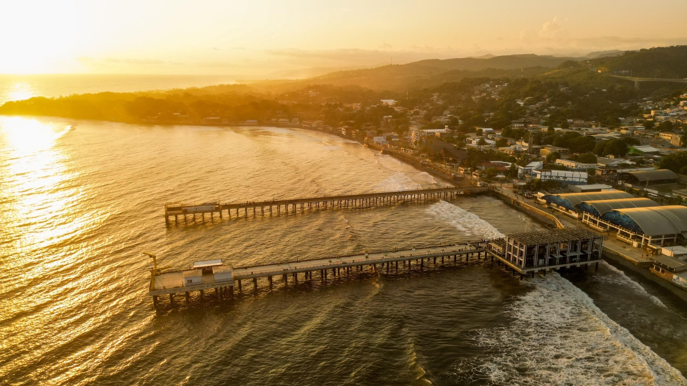

Destino costero reconocido internacionalmente por el surf.
Cuenta con una amplia oferta de hospedaje,
restaurantes y vida nocturna, lo que la convierte en un punto
dinámico del turismo nacional.

Puerto de La Libertad
Espacio tradicional para disfrutar gastronomía marina y vistas al océano.
El malecón se ha convertido en un lugar
de encuentro para turistas y visitantes locales.